WSO2 Data Services Server is a convenient mechanism to provide a web service interface for data stored in some datasources. Datasources such as relational databases, CSV files, Microsoft Excel files and google spread sheets can be easily service enabled using Data Services Server. Now, the data can be exposed and accessed in a secured(using WS-Security) and reliable(using WS-ReliableMessaging) manner, and is also available for mashing-up with other Web services.
You can download WSO2 Data Services Server from the following location.
[Download WSO2 Data services Server ]
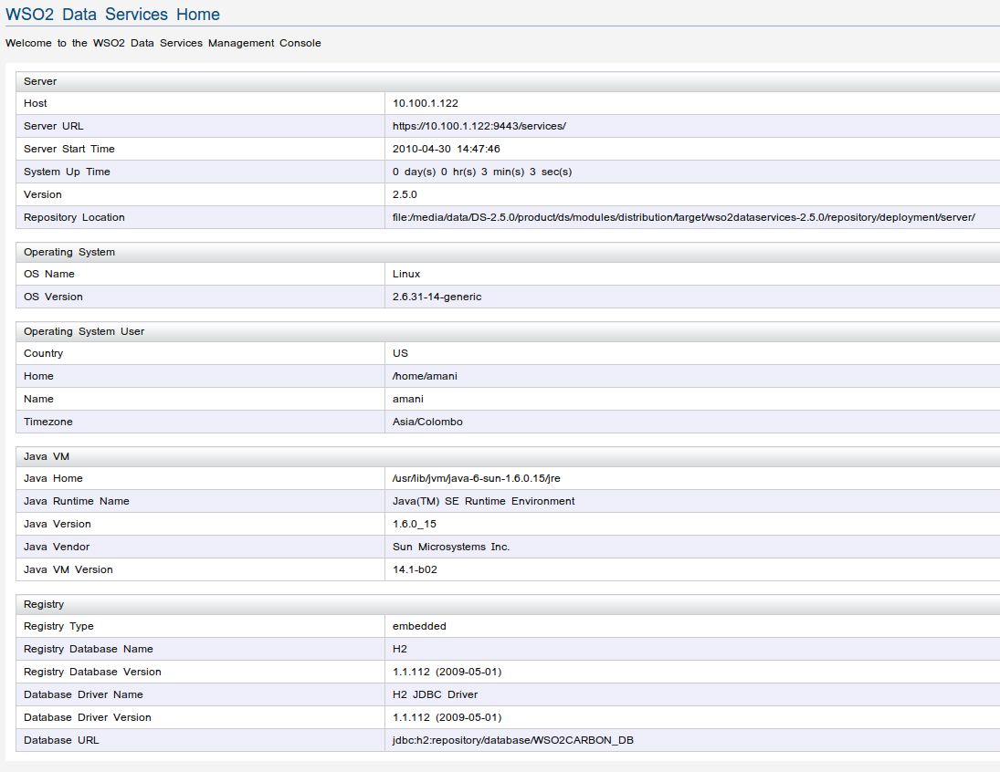
Figure 1: WSO2 Data Services Server Home Page
This guide assumes MySQL is configured in your system. If not, please download MySQL 5 or later version from here.
Lets create a simple data base with one table. Open a command prompt and type 'mysql -u root -p' to access mySQL prompt. If you installed mySQL default configurations, you may enter blank password and access mySQL prompt. Enter the following commands to create a sample database, create a table and populate sample data.
mysql>create database employeedb;
mysql>use employeedb;
mysql>create table employee(id VARCHAR(10) NOT NULL PRIMARY KEY, name VARCHAR(100), address VARCHAR(100));
mysql> insert into employee values('01','john','Boston');
mysql> insert into employee values('02','Micheal','Dallas');
mysql> insert into employee values('03','richard','Chicago');
mysql> exit;
Since we are using a MySQL database for our demonstration, we should copy mySQL JDBC driver to CARBON_HOME/repository/components/lib directory (e.g:- cp mysql-connector-java-5.0.3-bin.jar /home/user/wso2ds/wso2-dataservices-2.5.0/repository/components/lib).
After copying the necessary jdbc driver, make sure to restart WSO2 Data services Server.
We are ready to create our first data service using WSO2 Data Services Server. We will make use of the sample MySQL 'employeedb' database we have created in the previous step.
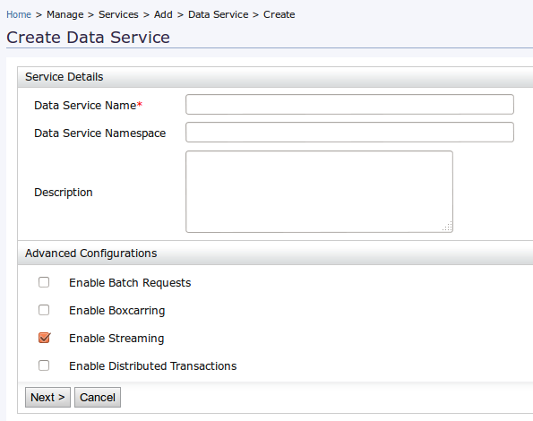
Figure 2: WSO2 Data Services Server Create Data Service page
Now we can enter the datasource details in this step. Let's start with giving a name for the datasource as 'DataSourceEmp'.
Select the datasource type as 'RDBMS' and enter the following values.
Database Engine = MySQL
Driver Class = com.mysql.jdbc.Driver
JDBC URL = jdbc:mysql://localhost:3306/employeedb
User name = root
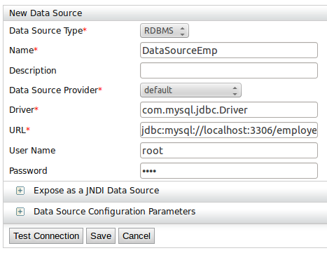
Figure 3: Create Datasource
Click on 'Save' button. You will see the created datasource as follows.
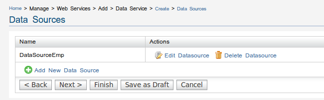
Figure 4: Created datasources list
Query ID = DataQueryEmp
SQL Statement = select id, name, address from employee
Grouped by Element = employees
Row name = employee
Row namespace = http://test.org
Mapping Type = Element
Output field name = id
SQL Column Name = id
Schema Type = string
Mapping Type = Element
Output field name = name
SQL Column Name = name
Schema Type = string
Mapping Type = Attribute
Output field name = address
SQL Column Name = address
Schema Type = string
We have added one query to our data service configuration. In this example, we do not use an SQL statement which accepts input parameters. Therefore, we can ignore 'Input Mappings'.
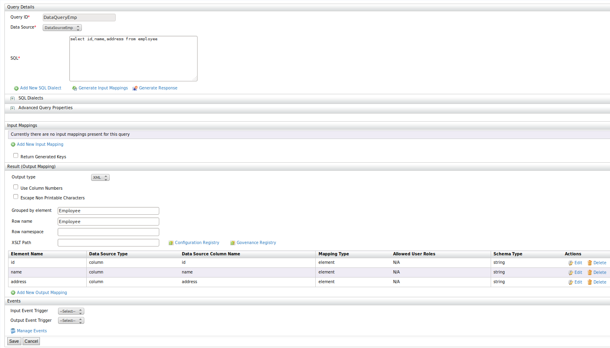
Figure 5: Add New Query
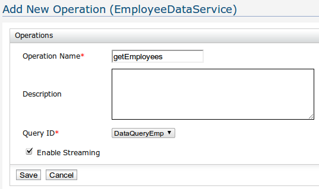
Figure 6: Add New Operations
You will notice that the query we have created in the previous step will be shown in 'Query' dropdown of the 'Add New Operation' window. Provide a name for the operation (e.g:- getEmployees) and click on 'Save'.
Your new data service will be listed in 'Deployed Services' page as follows.
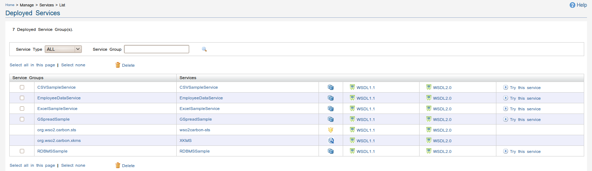
Figure 7: Deployed Services
In this section, we'll look at two different ways to invoke our data service without writing single line of code. First we will invoke our data service using 'Tryit' utility which integrated in to WSO2 Data Service Server Management console. Then we invoke it using a simple HTTP GET request.
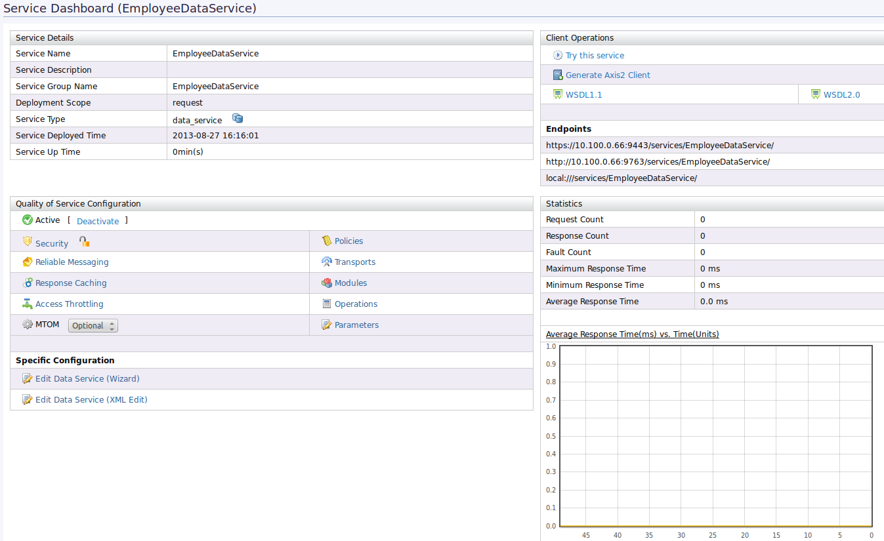
Figure 8: Service Management
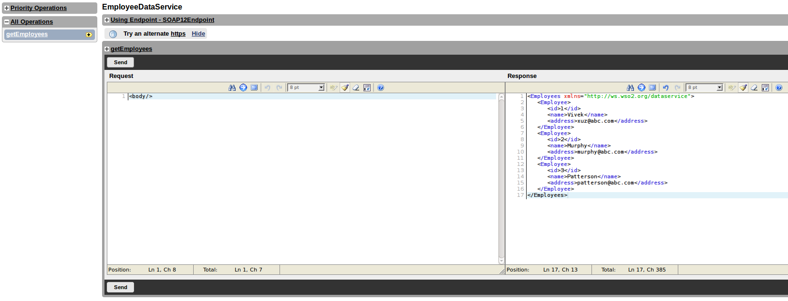
Figure 9: Try-it
Click on 'getAllEmployees' button to invoke our data service. You will get the response message in the same page. Note that employee id and name will be returned as xml elements and address will be wrapped as an attribute. This is due to our output mapping configuration at step 2 of the wizard. We have configured id and name as element mapping types and address as attribute mapping type. You can edit them and observe the associated changes in response very easily using Tryit.
http://[ipaddress]:9763/services/EmployeeDataService/getAllEmployees
You will get the same result back as in 'Tryit' approach
WSO2 Data Services Server provides the feature to create data services automatically using a given database structure. When generating the service, DS Generator will consider the table structure. According to the given table structure "SELECT", "INSERT", "UPDATE", and "DELETE" operations will get automatically created.
Step 1 - Create a Carbon Datasource
Before generating the data services Carbon datasource should be created according to the database properties.
Figure 10: Create Carbon Datasource
Step 2 - Select Datasource
To start the ds generation click on 'Generate' link on your left hand menu.
Figure 11: Generate Data Service
In the first screen that appears select the Carbon Datasource and the Database Name as shown below.
Figure 12: Select Datasource
Step 3 - Select Database Schema
After Datasource is selected, DB Schema needs to be selected to identify the needed tables.
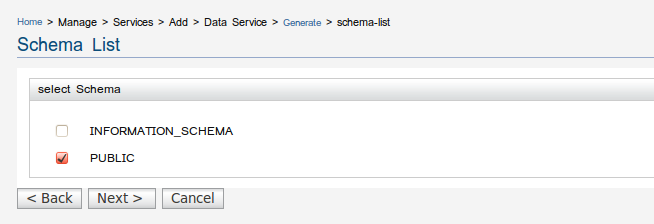Figure 13: Select DB Schema
Step 4 - Select Tables
Once the schema is selected, the table structure will display according to the given schema. Select the preferred tables for the data service generation.
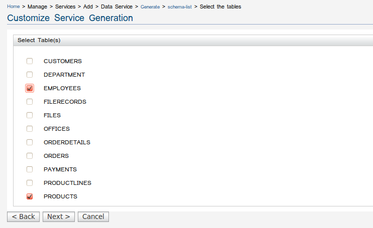Figure 14: Select Table Set
Step 5 - Select the Service Generation Mode
Once tables are defined, service generation mode needs to be specified. There are two options to generate the data service. 1. as a single service - where all operations for each table are given in a single data service. 2. Multiple services for each table - where for a given table only operations related to that table will be specified. Following example creates a single service for all tables as shown below.
Figure 15: Select DS Generation Mode
Once service generation mode is selcted, data services will get deployed, click next to view deployed services and click finish.
Figure 16: Created Services
Step 8: Service deployed
Now we have created a data service. You can go the deployed services list which is under Manage/Service/List. Created service will be list as follows. If multiple service mode is selected, multiple services will get generated according to the number of tables selected.
Figure 17: Deployed data services
Step 9 - Try your service - Single Service Mode
Click on "Try It" link to invoke the service. As seen in Figure 18, operations (Select, Update, Insert and Delete) for both tables are embedded in the same data service.
Figure 18: Try-it - Single Service Mode
Step 9 - Try your service - Multiple Service Mode
If Multiple service Mode is selected, different data services will get generated per each table.
Figure 19: Try-it - Multiple Service Mode
You can edit the deployed service by click on the service name under deployed services list. It provides two options to edit the service, which are Edit Service through wizard and XML Edit.
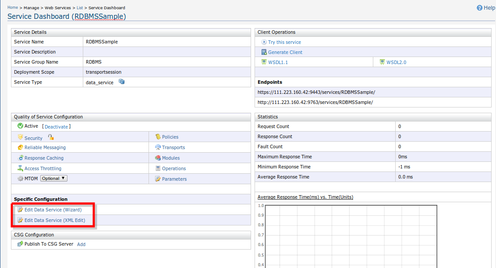
Figure 20 : Edit Service
Option 1 - Edit Data Service through wizard
If you click on the 'Edit Data Service (wizard)' option, you will be redirected to data service wizard. There you can edit the required information and go forward by clicking 'Next'. Finally by clicking 'Finish' , changes can be saved. This will be the similar wizard used when creating the service.
Figure 21 : Edit Data Service
After clicking 'Next' on above you can edit the datasource by clicking 'Edit Datasource' link.
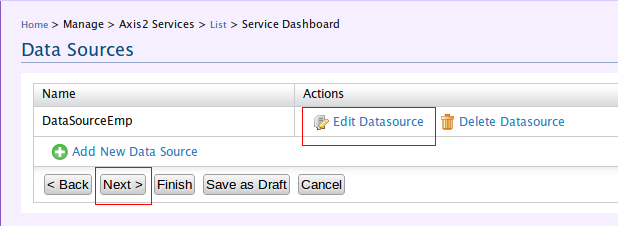
Figure 22 : Edit Datasource
Change the required values on "Edit Datasource' wizard page and click 'Save'

Figure 23 : Edit Datasource Information
Now you will be in 'Datasources' page. Click 'Next' to edit queries. Click 'Edit Query' link and change required information and click 'Save'.
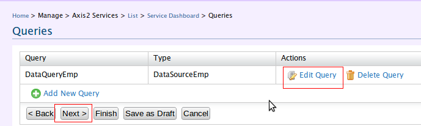
Figure 24 : Edit Query
Clicking 'Next' on Queries page will redirect to 'Operations' page. Click 'Edit Operation' link and change required information and click 'Save'.
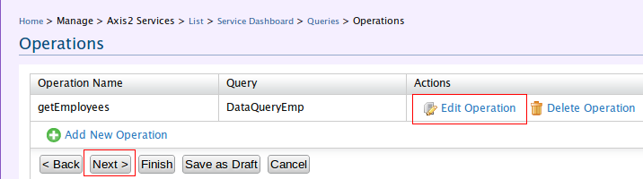
Figure 25 : Edit Operation
Option 2 - Edit Data Service through XML Editor
If you click on the 'Edit Data Service (XML Edit)' option, you will be redirected to the Data Service XML Editor. If you are familiar with data service configuration language, you can directly edit the required configurations through this editor. The 'config' element defines the datasource configuration. The data element describes the data service or the resource. The 'query' element defines the query and 'operation' element defines the operation. We can have any number of config, query, and operatiion elements. Further we can define 'resource' element to expose data as RESTful resources.
You can refer, Data Services and Resource Language document for further information
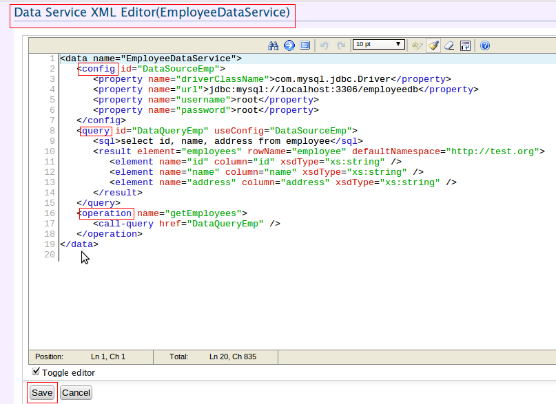
Figure 26 : Edit Data Service through XML Editor
You can easily upload a created data service by clicking on "Upload" link under Manage/Services/Add/Data Service left menu. Once you click on the link the following page will appear.
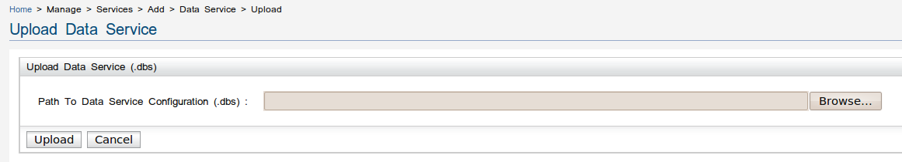
Figure 27: Upload Data Service wizard
Select the data service file(.dbs) which you prefer to uplaod.
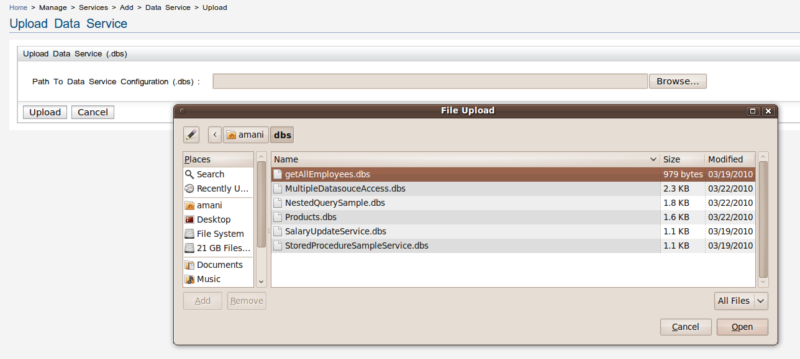
Figure 28: Select the file.
Once you select the data service file it will display as follows.
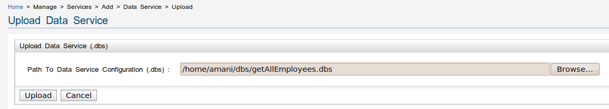
Figure 29: Selected file path
Selected datasource will deploy and list under the deployed service list as below.

Figure 30: Deployed Service
Select the services you want to delete from the services list and click on the delete link placed above the Services Groups table to delete the services. If the service has deployed as a faulty service, it will be displayed on the Deployed Services page as a [n] faulty service(s):. Same as for the deployed services, you can select the appropriate faulty services by ticking them and click on delete.
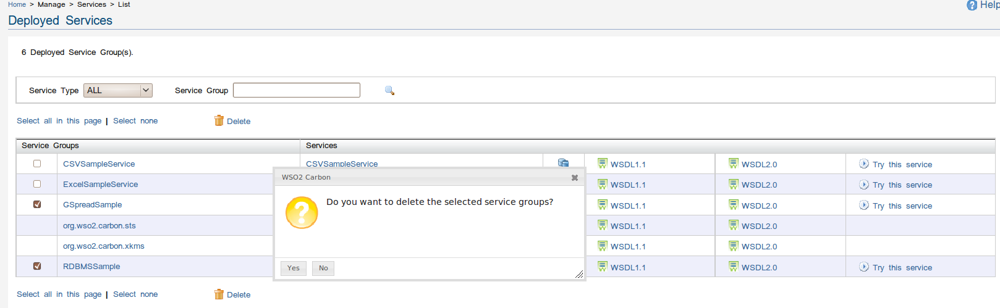
Figure 31: Delete Service
For more details on the Data services see User Guide